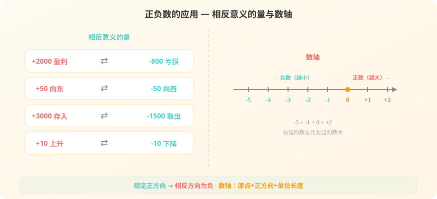

上节课我们认识了温度和海拔中的负数，这节课来看看正负数还能表示什么！

上节课我们学了温度和海拔中的正负数，想一想还有哪些？
选择或输入后，本课会围绕你的问题展开。
第1题：0是正数还是负数？
第2题：-10的"-"号可以省略吗？
在生活中，有很多相反意义的量，可以用正数和负数来表示：
📌 关键规则：先规定一个方向为正，那么相反的方向就用负数表示。
📌 盈利为正，亏损就为负；向东为正，向西就为负。
💡 习惯上，我们通常把"增加、上升、收入、零上"等规定为正，把"减少、下降、支出、零下"等规定为负。
把正数和负数画在一条直线上，就是数轴：
📌 数轴三要素：原点（0）、正方向（向右）、单位长度（每格代表1）
📌 0的右边是正数，0的左边是负数
📌 在数轴上，右边的数总比左边的数大
📌 所有正数都大于0，所有负数都小于0
例题：一辆公交车从起点站出发，车上原有20人。
第一站：上车8人，下车3人
第二站：上车2人，下车5人
第三站：上车0人，下车6人
如果把上车记为正，下车记为负，用正负数表示每站的人数变化。
第一步：确定正负
上车为正，下车为负
第二步：逐站表示
第一站：+8人（上车），-3人（下车）
第二站：+2人（上车），-5人（下车）
第三站：0人（没人上车），-6人（下车）
第三步：计算最终人数
原有20人 + 8 - 3 + 2 - 5 + 0 - 6 = 16人
⚠️ 易错提示：0表示"没有变化"，既不是正也不是负。如果某站没有人上下车，就记为0。
点击下面的数，看看它在数轴上的什么位置！
第1题：如果向东走50米记为+50米，那么向西走30米记为？
第2题：在数轴上，-3和-1哪个更大？
第3题：商店本月盈利5000元记为+5000元，上月亏损800元怎么记？
第1题：一潜水艇先下潜40米，再上浮15米。如果把上浮记为正，下潜记为负，用正负数表示这两次运动。
第2题：在数轴上，从0出发向左走3个单位长度，到达的点表示什么数？
第3题：把下面的数按从小到大排列：-5、3、0、-1、+2
本节课在整个数学知识树中的位置。